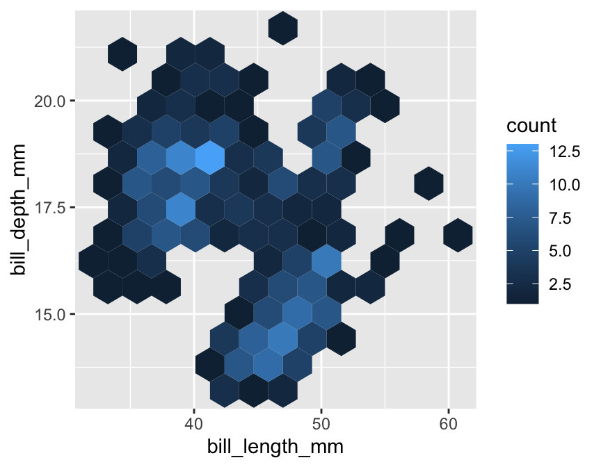
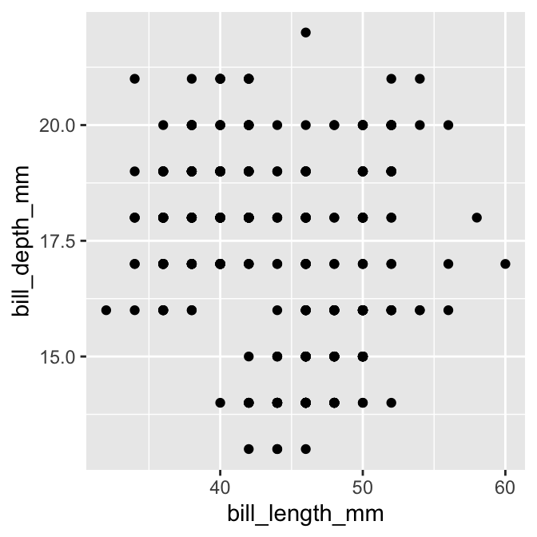

Chapter 16 Exploring associations
A pair of variables are said to be associated when knowing the value of one variable gives us information about the possible values of another. This chapter’s main goal is to show how to use visualisations to explore associations among different kinds of variables.
16.1 Associations between numeric variables
The standard graph for displaying an association among a pair of numeric variables is the scatter plot. This uses horizontal and vertical axes to show two variables as a series of points. We saw how to construct a scatter plot in the Introduction to ggplot2 chapter. Here is the initial plot we made to show the association between bill depth and bill length (ignoring species information):
# display bill morphology scatter plot
ggplot(penguins,
# aesthetic mappings: bill depth (y) vs bill length (x)
aes(x = bill_length_mm, y = bill_depth_mm)) +
# geom_point to add points layer
geom_point()
Most of the time, a scatter plot is exactly the right plot for visualising an association among numeric variables. One limitation of scatter plots is that they tend not to reveal associations when there is a lot of over-plotting happening. This occurs when:
- there is a lot of data (e.g. 1000s of data points), meaning the distance between points is very small; or
- there are many identical pairs of values, typically because both variables are discrete or a continuous variable is measured on a coarse scale.
In these circumstances, over-plotting of points tends to obscure the association. Sometimes we can mitigate this by making the points very small (problem #1) or semi-transparent (problem #1 or #2). But what should we do when those sorts of tricks fail to improve a plot? Luckily, ggplot2 provides alternative geoms for visualising numeric associations in situations where over-plotting is a problem.
Two options for dealing with large data sets (problem #1) are the geom_bin_2d and geom_hex functions. These work like histograms in two dimensions. The geom_bin_2d divides the plane into rectangles, counts the number of cases in each rectangle, and then uses the number of cases to assign the rectangle’s fill colour. The geom_hex function does essentially the same thing but instead divides the plane into regular hexagons.
Here’s an example of geom_hex in action (n.b. geom_hex relies on the hexbin package, so this need to be installed to use it):
# display bill morphology scatter plot
ggplot(penguins,
# aesthetic mappings: bill depth (y) vs bill length (x)
aes(x = bill_length_mm, y = bill_depth_mm)) +
# add shaded hex bin layer
geom_hex(bins = 12)
The bins argument controls how many hexagonal bins to use when spanning each dimension. The penguins data set is a bit small for this kind of plot (a scatter plot is actually better), so we had to use relatively coarse binning by setting the number of bins to 12.
Notice how similar this looks to the ggplot2 code for a scatter plot. We simply used geom_hex in place of geom_point. This reveals a powerful feature of ggplot2—once we have a working plot, we can often switch to a reasonable alternative by simply changing the type of geom. This makes it very quick to explore a data set in different ways.
What should we do if there are there are many identical pairs of values? For example, imagine that bill length had only been measured to the nearest 2 mm and bill depth had only been measured to the nearest 1 mm, like this:
## # A tibble: 344 x 2
## bill_length_mm bill_depth_mm
## <dbl> <dbl>
## 1 40 19
## 2 40 17
## 3 40 18
## 4 NA NA
## 5 36 19
## 6 40 21
## 7 38 18
## 8 40 20
## 9 34 18
## 10 42 20
## # … with 334 more rowsA scatter plot bill_depth_mm against bill_length_mm produced with those coarsened data would look like this:

This is not very informative because groups of points appear in exactly the same x/y location.
The geom_count function solves this problem by producing a scatter plot where point sizes are scaled according to how many cases are associated with each point. For example, the following code produces a modified scatter plot using a coarsened bill morphology data set (called penguins_coarse):
# display coarsened bill morphology scatter plot
ggplot(penguins_coarse,
# aesthetic mappings: bill depth (y) vs bill length (x)
aes(x = bill_length_mm, y = bill_depth_mm)) +
# use geom_count to add sample size scaled points layer
geom_count()
Again, notice how similar this looks to the ggplot2 code for a standard scatter plot. We simply used geom_count in place of geom_point.
16.2 Associations between categorical variables
Bar charts are often used to summarise associations between categorical variables. The basic idea is to produce a separate bar for each combination of categories in the two variables. The lengths of each bar is proportional to the value it represents, which is either a raw count or the proportion in each category combination.
Using ggplot2 to display this information is not very different from producing a bar graph to summarise a single categorical variable. Let’s do this for the species and year variables in penguins:
# display bar plot of year-species counts
ggplot(penguins,
# aesthetic mappings: year (x) by species (fill)
aes(x = year, fill = species)) +
# use geom_bar to add bar plot layer with stacked bars
geom_bar()We want to display information from two categorical variables, so we have to define two aesthetic mappings. We mapped the year variable (year) to the x axis and species (species) to the fill colour. Predictably, we construct the layer using geom_bar.
This produced a stacked bar chart. Each year has its own bar (x = year), and each bar has been divided up into different coloured segments, the length of which is determined by the number of observations associated with each species in that year (fill = species).
We have all the right information in this graph, but it could be improved in a couple of ways:
- Look at the guides on the x axis. There are some pointless extra lines. We saw this issue in a different guise in the previous chapter. It occurs because
yearis stored as a numeric vector—ggplot2 has no way of knowing we want to treat it as a non-numeric, categorical variable. - The ordering of the species in the stacks does not reflect the relative frequency of each species. Again, we saw this problem in the previous chapter—ggplot2 treats does not ‘know’ how we want to order the
speciescategories, and so it uses alphabetical order.
We need to ensure year is interpreted as a categorical variable and provide information about the required category order of species. R has a special kind of vector, called a factor, that is designed to tackle these kinds of issues. Factors are used by R to represent categorical variables.
We need to convert year and species to factors. How do we convert a numeric or character vector into a factor? Use the factor function (this is the first time we’ve mentioned this function). This has an argument called levels that sets the allowed categories and their order.
One way to start is by setting up a character vector of species names in the required order (species_names):
# levels of new species factor **in required order**
species_names <- c("Chinstrap", "Gentoo", "Adelie")We supplied the names in the order we want them to appear. Be careful with the spelling—the values of species_names have to match those used in species. We can now remake the bar plot, this time converting species and year to factors ‘on the fly’:
# display bar plot of year-species counts
ggplot(penguins,
# aesthetic mappings: year (x) by species (fill) AND convert to factor
aes(x = factor(year), fill = factor(species, levels = species_names))) +
# use geom_bar to add bar plot layer with stacked bars
geom_bar()This uses species_names to set the levels of species when we convert it to a factor. The stacking order of the bars then reflects their order in species_names. There was no need to set the levels of year because R will use the numeric order by default. Yes… the labels in that plot are ugly, but we could easily change these using labs function if we wanted to.
Factors
Factors are very useful and crop up all the time in R. A complete treatment of factors would require a whole new chapter. We’ve just shown one way to work with them via the factor function. This is enough to solve the reordering trick required to get ggplot2 to work the way we want it to, but there’s a lot more to learn about factors. There is even a package (forcats) that exists solely to make working with factors a bit easier.
One thing to be aware of is that it is sometimes simpler to convert variables to factors in a data set, rather than doing it every time we use them with ggplot2. For example, we could use mutate to create factor versions of year and species:
# convert year and species to factors to ensure correct ordering
penguins <- penguins %>%
mutate(year = factor(year),
species = factor(species, levels = species_names)) Any ggplot2 code that uses the updated version of penguins would then automatically respect the intended categorical nature of year of and the species ordering we desire.
A stacked bar chart is the geom_bar default. If we want to know how two categorical variables are associated it is sometimes better to plot all bars side-by-side. This is not hard to do. We switch to a side-by-side bar chart by assigning a value of "dodge" to the position argument of geom_bar:
# display bar plot of year-species counts
ggplot(penguins,
# aesthetic mappings: year (x) by species (fill) AND convert to factor
aes(x = factor(year), fill = factor(species, levels = species_names))) +
# use geom_bar to add bar plot layer with adjacent fill bars
geom_bar(position = "dodge")The position = "dodge" argument says that we want the bars to ‘dodge’ one another along the x axis. This slightly odd language is how ggplot2 specifies the position of grouped items so they are displayed next to one another.
Remember—the customisation techniques introduced in the Customising plots chapter are completely general. For example, we could improve the plot by using labs to set the labels, setting custom fill colours with scale_fill_manual, and applying a theme via theme_minimal:
# display bar plot of year-species counts
ggplot(penguins,
# aesthetic mappings: year (x) by species (fill) AND convert to factor
aes(x = factor(year), fill = factor(species, levels = species_names))) +
# use geom_bar to add bar plot layer with fill bars next to one another
geom_bar(position = "dodge") +
# customise fill colour scale
scale_fill_manual(values = c("cornflowerblue", "seagreen", "orangered3")) +
# specify labels for all mappings
labs(x = "Year", y = "Number of cases", fill = "Species") +
# apply minimal theme
theme_minimal()16.3 Categorical-numerical associations
The next obvious question is, “How do we display the association between a categorical and numeric variable?” As usual, there are a range of different options.
The most common is the ‘box and whiskers plot’ (or just ‘box plot’). This is best understood by example. To construct a box and whiskers plot we need to set ‘x’ and ‘y’ axis aesthetics for the categorical and numeric variable; then use the geom_boxplot function to add the appropriate layer. To examine the association between penguin species (species) and body mass measurements (body_mass_g), use:
# display box and whiskers plot of body mass for each species
ggplot(penguins,
# aesthetic mappings: body mass (y) vs species (x)
aes(x = species, y = body_mass_g)) +
# use geom_boxplot to add box plots layer
geom_boxplot() +
# specify labels for x- and y-axes
labs(x = "Species", y = "Body mass (g)")We can see why this is called a box and whiskers plot. There are four components of each box and whiskers:
The horizontal line inside the box is the sample median of the numeric variable—a measure of its central tendency. This allows us to compare the most likely value of the numeric variable across the different categories.
The boxes display the interquartile range (IQR) of the numeric variable in each category, i.e. the middle 50% of each group. This allows us to compare the spread (=dispersion) of the numeric values across categories.
The vertical lines above and below each box are the “whiskers.” The interpretation of these depends on which kind of box plot we are making. ggplot2 produces a traditional Tukey box plot by default. Each whisker is drawn from each end of the box (the upper and lower quartiles) to a well-defined extreme point. To find where the upper whisker ends, we have to find the largest observation that is no more than 1.5 times the IQR above the upper quartile. The lower whisker ends at the most extreme point that is no more than 1.5 times the IQR below the lower quartile.
Any cases that do not fall inside the whiskers are plotted as an individual point. These may be outliers, although they could also be perfectly consistent with the wider distribution.
The resulting plot compactly summarises the distribution of the numeric variable within categories. It provides information about the central tendency, dispersion and skewness of each distribution. We also get a sense of whether there are potential outliers by noting the presence of individual points outside the whiskers.
What does the above plot tell us about body mass and species? It shows the body mass distributions of Chinstrap and Adelie penguins are very similar, in terms of both central tendency and dispersion. In contrast, Gentoo penguins are generally larger and exhibit great absolute variation. The Gentoo body mass distribution is also the only one that seems to display much skew.
16.3.1 Alternatives to box and whiskers plots
Box and whiskers plots are a good choice for exploring categorical-numerical associations. They provide a lot of information about how the distribution of the numeric variable changes across categories. Sometimes we may want to squeeze even more information about these distributions into a plot. One way to do this is to make multiple histograms.
We know how to make a histogram, and we have seen how aesthetic properties such as colour and fill are used to distinguish different categories of a variable. This suggests we could overlay more than one histogram on a single plot. Let’s use this idea to see how the sample distribution of body mass differs among the species again:
# display histogram of body mass for each species in one plot
ggplot(penguins,
# aesthetic mappings: body mass (x) by species groups (fill)
aes(x = body_mass_g, fill = species)) +
# use geom_histogram to add histogram layer with customisation
geom_histogram(position = "identity", alpha = 0.8, binwidth = 200) +
# specify labels for all mappings
labs(x = "Body mass (g)", fill = "Species")We defined two mappings: the continuous variable (body_mass_g) was mapped to the x axis and the categorical variable (species) was mapped to the fill colour. Notice that we also set the position argument to "identity". This tells ggplot2 not to stack the histograms on top of one another. Instead, they are allowed to overlap. It’s for this reason that we also made them semi-transparent by setting the alpha argument.
Plotting several histograms in one layer like this places a lot of information in one plot, but it can be hard to make sense of when the histograms overlap a lot. If the overlapping histograms are too difficult to interpret, we might consider producing a separate one for each category. We’ve already seen a quick way to do this. Faceting works well here:
# display histogram of body mass for each species in separate panels
ggplot(penguins,
# aesthetic mappings: body mass (x) (only one!)
aes(x = body_mass_g)) +
# use geom_histogram to add histogram layer with sensible bin width
geom_histogram(binwidth = 200) +
# specify label for x-axis
labs(x = "Body mass (g)") +
# facet by species to get one panel per species
facet_wrap(vars(species))The two histogram plots tell much the same story as the box and whiskers plot. The body mass distributions of Chinstrap and Adelie penguins are very similar, Gentoo penguins are generally a bit larger, but all three distributions overlap to some extent.
16.4 Multivariate associations
We have now examined several ways for summarising associations between two variables. How do we explore associations between more than two variables in a single graph? That is, how do we explore multivariate associations? It is difficult to give a concrete answer because it depends on the scientific question we’re addressing, the kinds of variables we’re working with, and to a large extent, our creativity and aptitude with a graphing framework like ggplot2.
We have already seen enough of ggplot2 works to build some fairly sophisticated visualisations.The key point is that we don’t really need to learn anything new to visualise multivariate associations. There are two ways to add additional information to a visualisation, both of which we have already reviewed:
- Define aesthetic mappings to allow a layer’s properties to depend on the values of one or more variables.
- Use faceting to construct a multi-panel plot according to the values of categorical variables.
Constructing a multivariate visualisation is a matter of combining these approaches to squeeze information from several variables into a single graph.
We saw these approaches used together in the Introduction to ggplot2 chapter. Let’s look at one more example to cement the idea. We want to understand how the flipper length relates to body mass and how this numeric-numeric relationship varies by species, sex and island. That’s five variables in one plot!
The obvious idea is to produce a multi-panel scatter plot, where each panel is associated with combinations of the categorical variables. We have already seen how to do this kind of thing with facet_wrap. This time, we’ll use the facet_grid function to organise separate panels for each sex-species combination into a nice 2d grid:
#
ggplot(na.omit(penguins),
# aesthetic mappings
aes(
# flipper length (y) vs body mass (x)
x = body_mass_g, y = flipper_length_mm,
# colour AND shape of points vary by island
colour = island, shape = island)) +
# geom_point to add points layer
geom_point() +
# specify labels for ALL mappings (both Island labels required)
labs(x = "Body size (g)",
y = "Flipper length (mm)",
colour = "Island", shape = "Island") +
# facet on sex by species grid
facet_grid(rows = vars(sex), cols = vars(species))Simple. We set some aesthetics and used faceting to squeeze the five variables into one plot. The facet_grid function represents the values two or more categorical variables by row and column position, which means we have to set rows and cols arguments. The vars(…) bit is not optional by the way. We also took the opportunity to introduce a couple of new tricks:
- We used the base R
na.omitfunction on penguins to strip out any rows with a missing value. This avoids introducing an ‘NA’ category in the faceting. This trick can be a bit dangerous becausena.omitremoves every case where a value is missing. - We introduced some redundancy by mapping one variable (
island) to two different aesthetics (colourandshape). This achieves two things. It makes it easier to differentiate the points, and it ensures a plot can be understood if printed in black and white.
There is lots of information in this plot—for example, the association between flipper length and body mass is weakly positive, sexual dimorphism in body size seems to be greatest in Gentoo penguins, and the Adelie species is the only one present on all three islands.